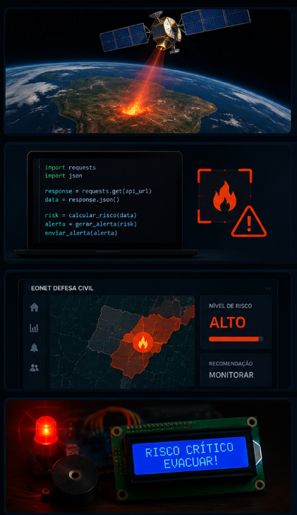

06

No Dia a Dia
Como funciona na prática com eventos reais.
1
Satélite detecta o evento
NASA FIRMS detecta foco de calor. EONET registra evento climático extremo. Tempo real.
2
Python classifica o risco
Script consome a API, calcula o nível de risco e prepara o alerta em ~2 minutos.
3
Dashboard atualiza
Gestores da Defesa Civil veem o alerta com localização, nível e recomendação de ação.
4
Arduino aciona alerta local
LED vermelho, buzzer e LCD na comunidade: "RISCO CRÍTICO — EVACUAR".

Eventos Reais — NASA EONET
Fonte: api.nasa.govEventos naturais ativos agora no planeta, direto da API da NASA:
Buscando eventos da NASA...